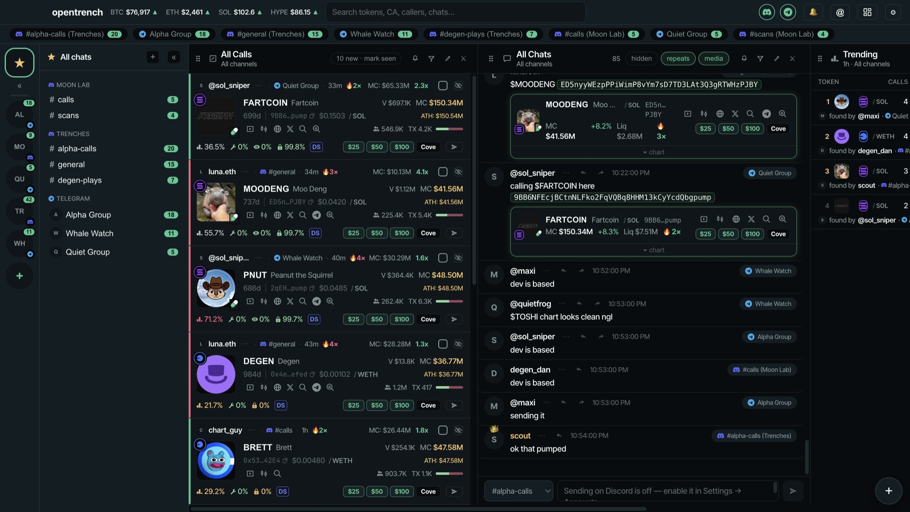
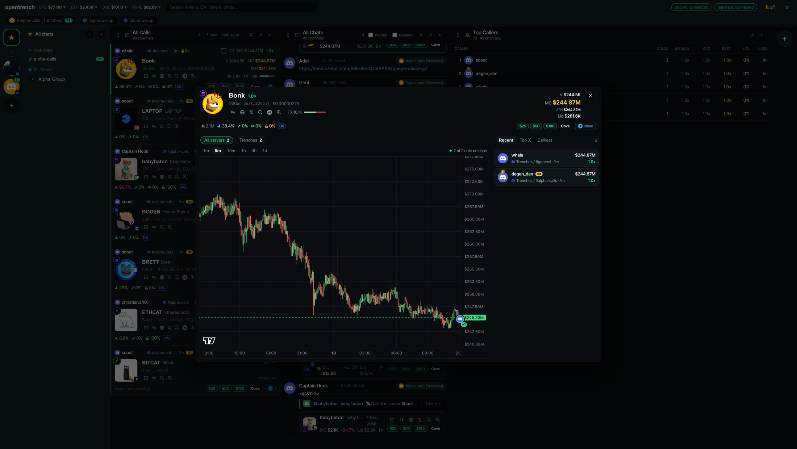

Every call from your groups.
One terminal.
opentrench watches the Discord servers and Telegram chats you're already in and turns every contract address into a live card: who called it, market cap then and now, holder security, one-click buys.

What it does
Calls, not scrollback.
Your groups already post the alpha. opentrench keeps up so you don't have to.
One card per token
Newest call first. Caller, channel, first-call badge, market cap at the call and the multiple since, age, liquidity, volume, buys and sells, holder security.
Columns you arrange
Calls, chats, top callers, Cove, Salpha, J7. Scope each to any channels, filter, reorder, resize, give each its own alert sound.
Pings with context
Everyone who @s you, across both platforms, with the messages before and after, a jump to the chat, and a reply box.
J7 tweets, paired with launches
Stream J7Tracker natively. Tokens launched off a tweet on pump.fun or Pons show under it within seconds.
Buy without leaving
Cove buy buttons on every card. Right-click any contract to buy, research on Salpha, or open the drill-down.
Reply from the terminal
Send on Telegram from any column. On Discord, sends go through your own Discord app, so there is no token and no self-bot.
Drill-down
Every caller, pinned on the chart.
Click a token's picture, or right-click any contract, called or not. Candles on a market-cap axis, each call marked where it happened, the full call list beside it.

Discord, done properly
No token. No self-bot.
A small plugin runs inside your own Discord app and feeds opentrench from there. To Discord, it's just you using Discord.